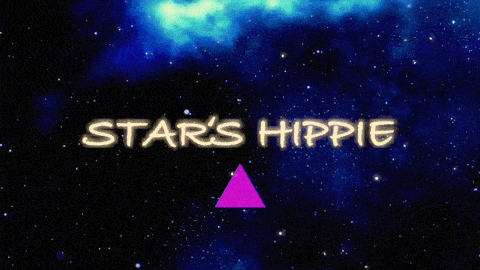

2022.9.8公開、2nd Album『STARSHIP PIE』について、まとめてあります。
こちらより各サブスク（Apple Music , Spotify等）から聴くことができます。
現実から宇宙（=夢の世界）へ旅に出る物語です。
全体的にスペイシーなサウンドになっています。
前作の『PARK MINDS』より曲調の幅を広げて作ったつもりですが、何となくワールド・ミュージック感が強いです。
「宇宙っぽいアルバムを作る」というざっくりとしたコンセプトが出来てからアルバムタイトルを考えました。
宇宙に関連する言葉を連想していたとき、ポール・マッカートニーの曲「Venus And Mars (Reprise)」の歌詞にある"Starship 21zna9"が頭に浮かび、まず"STARSHIP"を採用しました。
その後、"STARSHIP PIE"という文のスペース（空白の他に宇宙という意味もある）を移動させると"STARS HIPPIE"になるという事が面白くてアルバムタイトルが決まりました。
↓参考GIF

現実から宇宙へ向かう、物語の始まりの曲です。曲のデモは2019年の夏に作りました。その頃よく遊んでいた友達を思い出します。スピーカー大音量で音楽聴いたり、多摩川で遊んだことなど。
いざ現実を飛び出して目的地を目指す中、旅への意志を固めていく曲です。イントロ部分のロケット発射音はアポロ11号打ち上げ時の音声。NASAがSoundCloudに公開しています。VULFPECK「Back Pocket」のウーイェーが出てしまったので歌詞にもバックポケットを入れています。
曲は2018年に作りました。当時住んでいた三軒茶屋から新代田の図書館へ行く途中に思い付きました。その頃よく聴いていたArctic Monkeysのアルバム『Tranquility Base Hotel & Casino』の影響がありそうです。
宇宙での寂しさに負けてロボットを造る歌。簡単なギターリフから作った曲です。
「痛恨のマシーン」で造られたロボット目線の歌です。
地球での重圧を歌った曲です。ファンタジー系の映画音楽を何となくイメージしています。
地球での人間関係を歌った曲です。エスニックなアレンジにしています。
宇宙にて未確認生命体と恋をする歌です。後半の急展開は映画「グレート・ビューティー/追憶のローマ」のワンシーンから着想を得ました。
過去と現在を見比べる歌。バッキングギターの音色設定は前作『PARK MINDS』から持ってきました。途中のタイ語スピーキングが宗教っぽくてお気に入りです。
2019年頃作った曲です。歌を録音したのもそのくらいなので、声が若い感じがします。
寺岡アンジ・・・作詞と音楽
井上ミカ・・・ジャケットイラストとタイ語スピーチ（9.オーバーチュア）